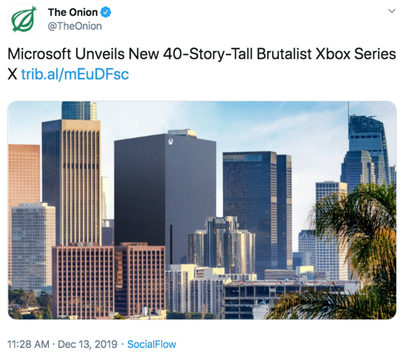

I had an Xbox 360 as a kid and still have it. Great console with great games. But i can't really say much about Xbox One and the newer Xbox consoles from my own experience. When Xbox One released, i actually kinda wanted one just because of the exclusive Forza Horizon games. Sure they were also available on the Xbox 360, but for some reason i really wanted the "better" version on Xbox one. Well long story short i never played the 2 first Forza Horizon games and played the 3rd one instead on my PC years after that.
The Xbox one or Xbox one series X never really appealed to me. I already have a gaming PC, which can play the same games those consoles could. I did at one point consider getting an Xbox One Series S, to use it as a streaming stations for Netflix and the likes and also play games through the Xbox Gamepass which costs 10 €/month. I never really did that either, because i already have a huge library of bought games so i don't see the need to spend 10 € every month on a game library which already has a bunch of games i have. And besides i am reaaally slow at beating singleplayer story games. I guess by playing too many Multiplayer shooters i got my brain wired to the constant action and dopamine of nonstop high octane fights.
Xboxes have always been really weird consoles in my eyes. The original xbox's and xbox 360's appeal i can understand, yet using the Xbox 360 always felt weird. The interface was weird and the controller was also weird in a way if you compare it to newer controllers. In the end i would just rather play on my PC than on my Xbox 360, because i didn't feel like i really missed out on much. I wasn't allowed to play PEGI 16 or 18 rated games as a kid so Multiplayer shooters like Halo weren't really a thing for me. I got to play the golden Halo games later on PC though with the release of Halo: Master Chief Collection, which just made me realize that i'm not really that much into Halo anyways.
I have to thank the Xbox 360 for giving me some really great gaming experiences as a kid. When i downloaded Steam on my pc in 2013, i started to move towards PC gaming more. Before that i pretty much only played Minecraft on my crappy laptop that i had. Speaking of Minecraft i had a lot of fun playing the Xbox edition of Minecraft with my brothers in splitscreen.